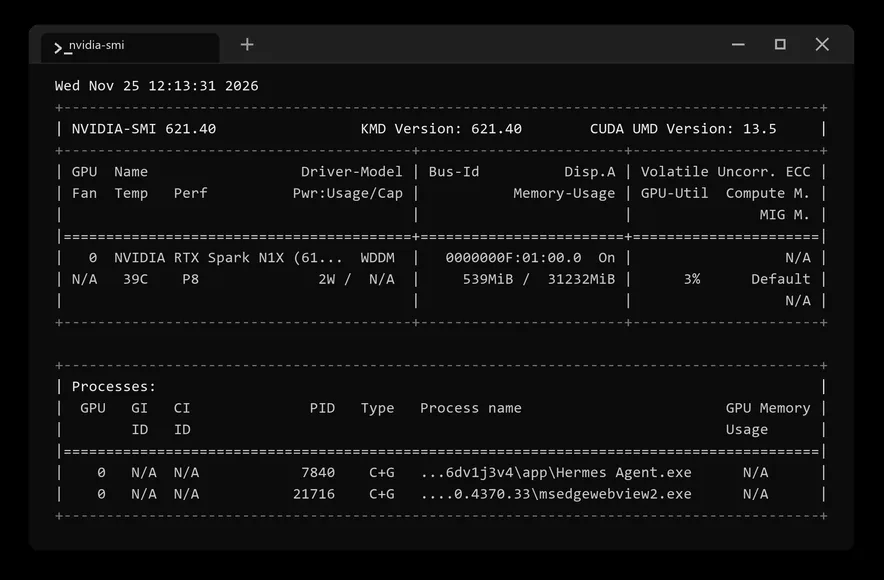

一句话：一台 140 W 的统一内存小型工作站，AI 是主场
- ✓身份成立 官方桌面档 6144-core GPU + 20-core CPU，本机 48 SM / 6,144 CUDA / 20 线程完全对上；桌面档 NPU 为 “-”，本机也未枚举到 NPU。官方规格页 · nvidia-smi · CUDA 属性 · NVIDIA App 四方交叉
- ✓官方能力成立 第四代 RT Core、第五代 Tensor Core、DLSS 5（运行时与 API）、第九代 NVENC / 第六代 NVDEC 均可在本机复现；设备 / 主机最大 PCIe Gen5，当前链路 1×Gen1；计算能力 12.1，CUDA UMD 13.5；编码 7/7 通过，解码 6/7 通过（H.264 4:4:4 不在 NVDEC 色度范围）。dxdiag Feature Level 12_2 · Vulkan RT 扩展 · ffmpeg 原生 ARM64 实测
- ✓性能位置清楚 Geekbench 7 Vulkan 中位 111,605，介于 RTX 4060 与 4060 Ti 之间；CUDA 中位 179,627；纯读带宽 252 GB/s；FP16 实测 58.9 TFLOPS。这是 GPGPU 综合分，不是游戏帧率
- ✓内存是本站重点 30.50 GiB 帧缓冲、45.92 GiB CUDA 配额、32.18 GiB 系统可见同时成立；最大单次分配 45.75 GiB；6 个独立会话跨过 30.5 GiB 边界未观察到断崖。真正的限制是驻留与提交，不是带宽
- ✓端到端可用 Qwen3.8-27B IQ4_XS：短上下文 36.6 tok/s、32K 30.2、89K 19.3；prompt cache 32K 命中 ×169；8 路并发聚合 2.07×；40 题质量 92.5（思考关）/ 95.0（思考开）。适合 1–2 个并发用户；长文档适合批处理
- ✓视频生成可用 MiniMax H3：5s @1344×768 原生 8 步 15m59s 可交付；10s @1344×768 需换 FreeVideo 管线，9m37s；三组峰值 30.33–30.38 GiB。07 视频报告 · A/B/C 三组 + D 基线
- ✓游戏能跑，但不稳 ARM64 Windows 上 Steam x64 客户端可安装，125.65 GB 下载 60 分钟完成；Denuvo 校验通过，1080p 画质正常，游戏内约 40–60 FPS（观察值）；实际游玩约 5 分钟出现一次原因未定的崩溃。08 游戏报告 · 单次会话 · 崩溃未归因
一句话定位。 它是一台 140 W、64 GiB 统一内存的 ARM64 小型工作站：本地 27B 级模型、长文档、视频生成、CUDA/ARM64 开发是主场；1080p 游戏已实测可玩（约 40–60 FPS），但稳定性还差一次崩溃的归因；带宽敏感型 HPC 不是强项；4K 光追游戏与 FP64 密集型 HPC 尚待实测。
下面所有数字都标注口径。官方规格、本机实测、项目推算、单次现场回显不会混在一起。
先看身份，再看算力，然后拆内存，最后落到模型与游戏
主线是七步：身份与能力 → 横向算力 → 内存机制 → 端到端 LLM → 视频生成 → 游戏兼容 → 结论；02 / 05 / 09 分别是配置旁证、快读与证据索引。跳过任何一步，后面的数字都会失去上下文。
为什么是这个顺序
先确认“它是什么”，再谈“它有多快”。 N1X 不是一张插在 PCIe 槽里的显卡，而是 GB10 级别的 SoC：CPU、GPU、内存共封装，Windows 上还要经过固件预留与 WDDM 配额。如果不先确认档位，后面很容易把“统一内存”当成“独立显存”来读。
算力必须横向比，且要分口径。 官方只给了一个 1 PFLOP FP4 的数字；Geekbench 给的是 GPGPU 综合分；PyTorch 给的是各精度 GEMM 实测；带宽微基准给的是另一个维度。四套数字不能互相替代。
内存是这台机器最容易被误读的部分。 30.50、45.92、32.18 三个数字都成立，但回答的是不同问题。把这三个数字混成一个“可用显存”，后面的模型规划就会全错。
最后必须落到模型。 带宽 252 GB/s、配额 45.92 GiB 这些中间量，只有变成 Qwen 的 36.6 / 30.2 / 19.3 tok/s、并发扩展与质量分，才能回答“买它值不值”。
游戏是另一条端到端验证，但不是跑分的附属品。 官方支持 DLSS 5 不等于“游戏里能开”；1080p 能进场景、画质正常、40–60 FPS 与一次未归因崩溃，回答的是“这台 ARM64 机器能不能当游戏机”这个独立问题。
先拿到结论
适合第一次接触 N1X、只想知道“它能干什么”的读者。
做选型与容量规划
适合要在 Windows 上部署大模型、视频生成或显存密集任务的工程师。
逐条核对证据
适合要复现、要引用、或要挑战结论的读者。
十份报告，一条证据链
每份报告解决一个独立问题，同时为下一份提供输入。点击卡片进入全文；页面底部有上一份 / 下一份导航。
参数与能力报告
官方三档并列，确认 ASUS GR1X 对应桌面 6144/20 档；28 项逐条核对 RTX、DLSS 5、NVENC / NVDEC 与平台能力。
NVIDIA App 图文配置
9 个应用页面（含子项共 18 张）：驱动、显存划分、显示链路、性能传感器与图形设置。GUI 侧的独立旁证。
GPU 性能基准调研
Geekbench 7 同工具对比、各精度 GEMM、显存带宽，与 RTX 3090 / 4090 / 5090 放在同一张表里。
内存与带宽实测
三个上限、6 会话跨边界扫描、页放置标定、36 GiB 超配持续负载、ComfyUI 真实生成。结论：常驻即可全速，驱逐才慢。
同一个 GB10，两种内存命运
为什么 nvidia-smi 说 30.5 GiB，CUDA 却愿意给 45.9 GiB？一篇不需要驱动开发背景的解读。
Qwen3.8-27B IQ4_XS 本地推理
同一台机器、同一份 IQ4_XS 权重、同一套 llama.cpp：短/长上下文、MTP、prompt cache、并发、热稳态与 40 题质量。
MiniMax H3 视频生成
30.5 GiB 卡上跑 33B 全模态模型：5s / 10s、原生 ComfyUI 与 FreeVideo 两条管线，速度、显存、功耗与成片质量。
《黑神话：悟空》ARM64 实测
Steam x64 模拟、125.65 GB 下载、Denuvo 校验、9.5 分钟着色器编译、1080p 画质与 40–60 FPS，以及一次未归因的崩溃。
原始读数与证据墙
nvidia-smi、官方规格长图、ffmpeg / Vulkan / DLSS 枚举、NVIDIA App 关键页，以及最容易混的七组口径。
总评与选型建议
把前九份报告收成一张表：强项、边界、待补测的场景、内存预算、并发建议，以及仍未回答的问题。
十二个结论，每个都带口径
下表是整站最短的版本。右列的“证据”指向具体报告；需要看原始数字时，沿链接进去。
| 维度 | 结论 | 关键数字 | 证据 |
|---|---|---|---|
| 身份与档位 | 不是笔记本档，是桌面 6144/20 档；桌面档没有 NPU。 | 48 SM · 6,144 CUDA · 20C/20T · NPU “-” · 140 W | 01 参数 |
| 官方能力 | RTX / 光追 / DLSS 5 / 媒体引擎 / 平台 API 全部可在本机复现。 | 28 项核对 · 编码 7/7 · 解码 6/7 · DX12 FL 12_2 | 01 参数 |
| GPGPU 天梯 | 介于 RTX 4060 与 4060 Ti 之间；相对 3090 明显落后，但不是同一形态。 | Vulkan 111,605 · CUDA 179,627 · 3090 的 58.4% / 67.9% | 03 基准 |
| 精度算力 | FP16 接近 59 TFLOPS；FP8 实测超过旧推算模型；FP4 只有推算。 | FP32 19.1 / 18.0 · FP16 58.9 · FP8 159–166 · FP4 473.8* | 03 基准 |
| 带宽 | 纯读接近理论峰值；写与拷贝是短板；不要用拷贝单向速率估算读密集任务。 | 纯读 252 GB/s · 读+写 233 · 纯写 183 · 理论 273 | 03 基准 |
| 内存三口径 | 30.50 / 45.92 / 32.18 同时成立，回答不同问题。 | FB 30.50 GiB · CUDA 配额 45.92 GiB · 可见 32.18 GiB | 04 内存 |
| 超配行为 | 跨过 30.5 GiB 没有断崖；真正的代价是驻留与提交，不是链路。 | 6 会话写 −0.4% / 读 +1.5% · 36 GiB×5 min 122 GB/s | 04 内存 |
| 本地 LLM | 27B IQ4_XS 可稳定运行；短上下文快，长上下文受带宽与 KV 读取拖累。 | 36.6 / 30.2 / 19.3 tok/s · MTP ×2.16 · cache ×169 | 06 推理 |
| 并发与热 | 适合 1–2 个并发用户；10–13.5 分钟持续负载未见持续降频。 | 8 路聚合 2.07× · 77–83 °C · 600 s FP32 105.9 W | 06 推理 |
| 视频生成 | 5s 原生可交付；10s @1344×768 需换 FreeVideo 管线；三组都贴着 30.5 GiB。 | 15m59s / 14m15s / 9m37s · 30.33–30.38 GiB | 07 视频 |
| 游戏兼容 | Steam x64 可装、Denuvo 可过、1080p 画质正常；但游戏内只有 40–60 FPS，且 5 分钟崩了一次。 | 125.65 GB / 60 min · 40–60 FPS（观察） · 5 分 15 秒后崩溃 | 08 游戏 |
| 未验证 | 游戏内逐帧统计与崩溃归因、4K 光追、DLSS 游戏内提升、FP4 GEMM、>40 GiB 长负载、30 分钟以上热漂移，都不能从现有数据外推。 | — | 10 总评 |
* FP4 473.8 TFLOPS 为项目按 48 SM × 2.41 GHz 的推算值，不是实测；官方口径是 1 PFLOP（FP4，稀疏）。详见 03 精度算力。
六个最容易混的口径
这一节不是术语表，而是“读本站时最容易把两个数字加在一起”的六处。先把它们分开，后面所有表格才读得顺。
1 GiB = 230 B；1 GB = 109 B。31,232 MiB = 30.50 GiB = 32.75 GB；32.18 GiB = 34.56 GB。本站容量默认 GiB、带宽默认 GB/s，均会标注。
FB 30.50 GiB 是分区；CUDA 45.92 GiB 是配额；系统可见 32.18 GiB 是 OS 口径。45.92 − 30.50 = 15.42 GiB 是残差，不是额外物理内存。
纯读 252 GB/s、纯写 183 GB/s、D2D 单向 116.5–117.5 GB/s（读+写总流量 233–235，视会话）。用 118 或 180 去估读密集任务，会明显低估。
1 PFLOP 是官方 FP4 稀疏口径；473.8 TFLOPS 是项目推算；FP8 159–166 是实测；FP32 19.1 是短时 GEMM。四者不能互相替代。
nvidia-smi 当前显示 1×Gen1，设备/主机最大 Gen5；这是链路当前读数，不代表 GPU 只有 Gen1。C2C Mode Enabled。
NVIDIA App 报 Direct3D 功能级别 12_1；Windows dxdiag 报 Feature Levels 12_2。引用时写明来源，不要混成一个数字。
术语：FB = 帧缓冲分区；D2D = Device-to-Device；MTP = Multi-Token Prediction；IQ4_XS = GGUF 4-bit 量化（4.25 bpw）；C2C = CPU-GPU 一致性互连；WDDM = Windows 显示驱动模型；CUDA UMD = CUDA 用户态驱动。
证据等级。 本站用四种标签：实测通过 表示多会话/多次重复且结果一致；实测读数 表示本机读到但未必多次；口径/推算 表示依赖假设或现场回显；未验证 表示没有数据，不外推。
完整的原始文件、截图与日志索引在 09 证据墙。
回到那张 nvidia-smi
首页的结论都可以回到这张原始读数。它只代表 2026-11-25 12:13:31 的一刻，但足以确认驱动、CUDA UMD、显存分区与空闲状态。
